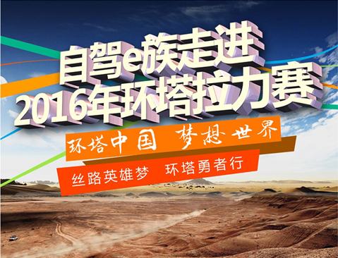
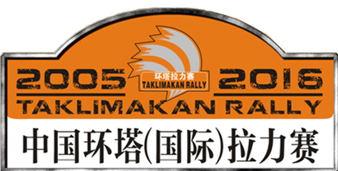
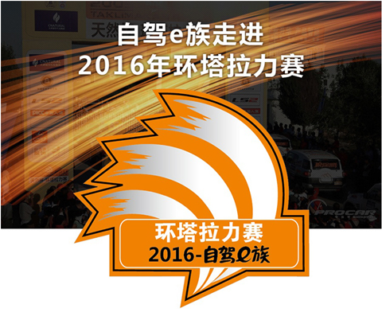

自驾e族走进2016年环塔拉力赛
 money
2016-03-04 来源：自驾e族
money
2016-03-04 来源：自驾e族


中国环塔拉力赛，全称环塔克拉玛干汽车摩托车越野拉力赛，暨中国越野系列赛新疆站创办于2015年，为每年举行的国家A级体育运动赛事项目。2011年起，环塔拉力赛已经正式升级为国际级赛事，现已成功举办9届，是亚洲第一，国内最大的汽车、摩托车、卡车同场竞技权威品牌越野国际赛事。

2016换他拉力比赛区域覆盖塔城地区、克拉玛依市、昌吉市、吐鲁番市和巴音郭楞蒙古自治州、和田地区、阿克苏地区等；比赛时间为5月15日至5月30日，将于塔城市开幕，阿克苏闭幕，赛程为15天，共计12个赛段。全部赛程65000公里，其中特殊赛段4000公里。常规组别有汽车组、摩托车组、卡车组，任保留2015年环塔体验组，另增设新能源组。
经过十年的品牌培育与发展，如今的环塔拉力赛已经成长为新疆体育旅游文化名片、中国最具商业价值的也uy额赛车运动品牌、亚洲顶级越野赛事。2016环塔拉力赛新闻发布会结束后，环塔秘书处将正式启动车队参赛报名工作。同事2016环塔联合勘路工作和2016环塔全国志愿者招募活动也将随之启动。